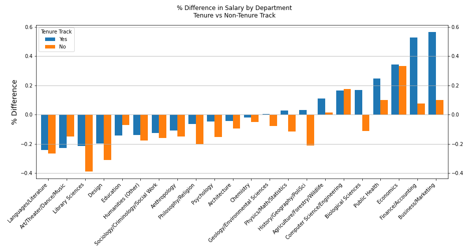
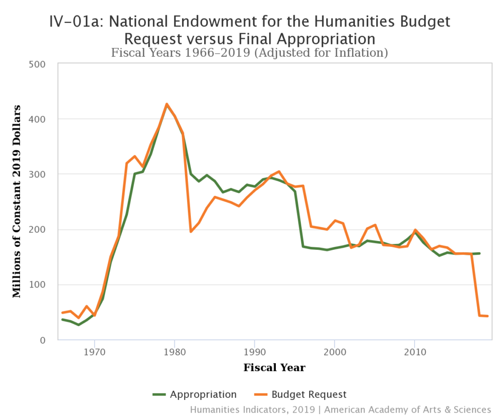

August 24, 2022
Teaching at the university level generally requires a Ph.D. However, that level of education doesn't always lead to the highest salaries. I looked at publicly available data from North Carolina universities to determine how the school, department, and available tenure-track positions affect an educator's paycheck.
The Institution
The data shows that most of the schools' median salaries were close to the cross- school median of $85,027, but were much higher for top schools (like UNC Chapel Hill and NC State) and much lower for small schools (like UNC Pembroke and Elizabeth City State).

Business department pays the most...English, the least
Before looking at the data, I was convinced that STEM department professors would have the highest paid. Although, they are some of the highest, their salaries are slightly behind the professors in the business school. The three departments comprising the business group, Business/Marketing, Finance/Accounting, and Economics, are the top three in salaries. Unsurprisingly, the humanities group have some of the lowest. The disparity between the Language/Literature departments and the Finance/Accounting departments is quite glaring, with median salaries of $63, 732 and $141,004, respectively — more than double!
Here's the department breakdown:

The Languages/Literature department, which encompasses departments like English, was the lowest paid category at almost all schools. Some claim the lower wages are the result of the decline in tenure-track positions for these departments (read more). It is true that the Languages/Literature departments do have the smallest percentage of faculty in tenure-track positions, but there doesn't seem to be a direct a correlation between the number of tenure-track positions and salary. For example, Library Sciences has a relatively high percentage of tenure-track positions with low salaries.

The lack of tenure-track positions for the department may be a factor in the salary, but it isn't the whole picture. Even the tenure-track positions have an expected salary more than 20% lower than the average (seen in the chart below.)
Why the disparity?
Why do the Languages/Literature departments get paid so little? Many have claimed that there is far too many students with not enough jobs; however, students majoring in the humanities are on the decline (those majoring in English down 47% since the 70s). With less students to teach, perhaps the market is flooded with professors without enough students to teach. Compounding the issue is 'degree inflation' — a bachelor's degree in English isn't enough to get a job today. This leads to less students majoring in English, but leading those who do to obtaining more advanced degrees without roles to fill in academia. Perhaps is is because funding for humanities has been dramatically decreasing since the 1960s (shown below from the American Academy of Art & Sciences)
Obviously, most professors are professors because of their passion for their field— not to make the highest
salary. However, the trends in funding and pay may be indicating that students and school's no longer value
certain departments as much as they used to. For those planning a career in academia — especially one in
languages, literature, or fine art — it would be wise to weigh the costs of an advanced education against
the job opportunities in the field.
∎